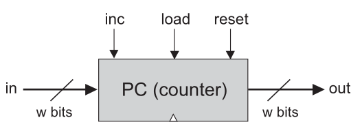
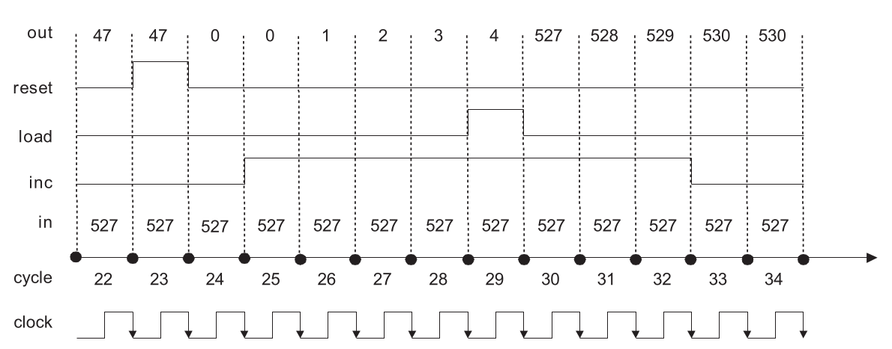

Program Counter
Remembering which instruction comes next.
Why Does a Computer Need a Counter?
Move to the next instruction: PC = PC + 1.
Load a different instruction address into the PC.
Reset to 0, or hold the same instruction address.
The PC Interface

- Data input
in[16], used when loading a new address.- Control inputs
inc,load, andreset.- Output
out[16], the currently stored instruction address.
Each control input is one bit. They decide whether the next stored value is zero, the external input, the incremented value, or the old value.
The PC Contract
- Chip name:
- PC
- Inputs:
in[16], inc, load, reset- Outputs:
out[16]- Function:
if reset(t-1) then out(t) = 0 else if load(t-1) then out(t) = in(t-1) else if inc(t-1) then out(t) = out(t-1) + 1 else out(t) = out(t-1)
reset: force zero
load: load in
inc: increment
otherwise: hold
Why Priority Is Necessary
What should happen when more than one control bit is 1?
reset=1, load=1, and inc=1
reset wins, so the next output is 0.
reset > load > inc > hold
Priority is part of the specification, not merely an implementation choice.
Example: Tracing the PC

Use the priority order reset > load > inc > hold to read each cycle.
Trace the PC
Assume the PC starts with out=47. Fill the output after each cycle.
| cycle | in | reset | load | inc | out after cycle |
|---|---|---|---|---|---|
| 1 | 527 | 0 | 0 | 0 | 47 |
| 2 | 527 | 1 | 0 | 0 | 0 |
| 3 | 527 | 0 | 0 | 1 | 1 |
| 4 | 527 | 0 | 1 | 1 | 527 |
| 5 | 800 | 1 | 1 | 1 | 0 |
Constructing the PC
Use known chips to compute candidate next values, then select the one mandated by the control priority.
stores the current PC value.
computes out+1.
selects among hold, increment, load, and reset candidates.
enforces reset > load > inc > hold.
Control the Internal Register Load
The internal Register changes only when its own load input is 1. When must the PC force that internal load to 1?
internalLoad = ?internalLoad = reset OR load OR inc
If all three controls are 0, the PC holds its previous value, so the internal Register need not load.
Debug a Broken PC
A proposed PC gives inc priority over load. Find a counterexample.
out=10
in=200, load=1, inc=1, reset=0
The specification says load wins, so the next output must be 200. The broken design would output 11. Therefore the priority order is wrong.
Sequential HDL and Simulation
Combinational logic may take time to settle.
DFF-based chips capture the value that should be remembered.
In simulator tests, tick and tock let us observe this clocked behavior.
Predict Before Simulation
A Bit starts with out=0. Predict the observed output.
| cycle | in | load | out after cycle |
|---|---|---|---|
| 1 | 1 | 0 | 0 |
| 2 | 1 | 1 | 1 |
| 3 | 0 | 0 | 1 |
| 4 | 0 | 1 | 0 |
One Hierarchy, Built Bottom-Up
- DFF
- Bit
- Register
- RAM8
- RAM64
- RAM512, RAM4K, RAM16K
- Register stores the current value
- Inc16 computes the next value
- Selection logic chooses reset, load, inc, or hold
- PC becomes the controlled counter
Chapter Tutorial Questions
Can two writes to different RAM addresses interfere? Explain using load routing.
A RAM has 2048 words of 16 bits. Find address width and total capacity in bytes.
Design a two-register memory using Registers, DMux, and Mux16.
Why can a sequential chip tolerate temporary unstable combinational values within a cycle?
If a 16-bit PC at 32767 increments, what bit pattern follows? Interpret it as unsigned and signed.
Write an HDL plan for PC reset and load priority using Mux16 chips.
Build the Chapter 3 Chips
Use primitive DFF, chips gradually built in this lab, and chips from previous chapters. Test every level before building on top of it.
Program Counter
The PC remembers the instruction address.
It can reset, load, increment, or hold.
reset > load > inc > hold.
A one-cycle delay makes feedback, memory, and counters possible.
Lecture 11: Machine Language
Now that the hardware can compute and remember, we can ask how programs speak to the machine.